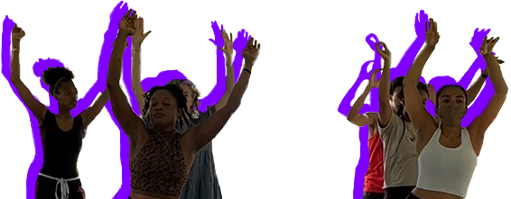
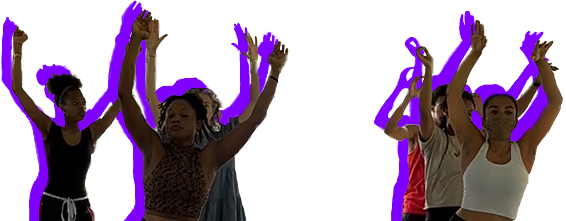
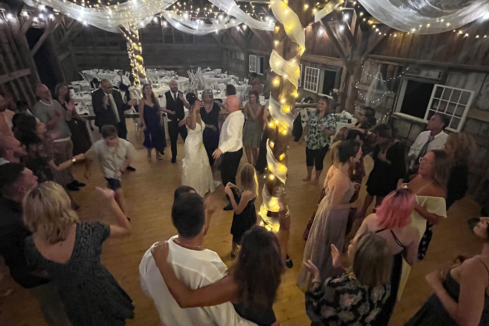

An activation begins when A.a.ron Myers and Ed Word Galan, the dynamic duo behind our organization, arrive on the scene, ready to jam!
Other DJs and music venues may depend on electricity or a permit, but our battery-powered sound system and
portable dance floor help us bring the funk almost anywhere.

We have seen movement and creative expression bring people together in our work.
As A.a.ron puts it, “Movement says more than you could say in words, it builds a sense of community,
bridges people who might see themselves in different groups or communities.”
But if dancing isn’t for you, our activations offer the opportunity to try out sidewalk chalk...


or instruments.
To promote all forms of expression, we host local artists’ workshops, dance lessons and guest speakers.
When everything is set up, our emcee A.a.ron introduces A Trike Called Funk
and the event’s partner.
A.a.ron likes to start off the dancing, pulling in onlookers while Ed Word
mans the trike and cranks out the tunes.
Participants can be a hesitant to dance with a group of strangers,
but our enthusiasm never fails to draw in the crowd.
Kids are usually the first to get out on the floor…
Soon enough, everyone can’t help but join in. Our activations are full of laughter, dancing and creativity from all ages.
 


Anyone can get down with us, because our activations take advantage of public spaces available to everyone. They have taken place day and night, at parks...

beaches...

weddings...
and more!


In the coming year, we hope to further expand the variety of our activations. We’re especially excited to explore educational experiences and build on our past workshops in cultural appreciation and hip-hop at Suffolk University.
At the end of the day, our activations are about unleashing creativity,
connecting people and building community.
If this sounds like your jam, join our community of creative
collaborators! Contact us at atrikecalledfunk@gmail.com